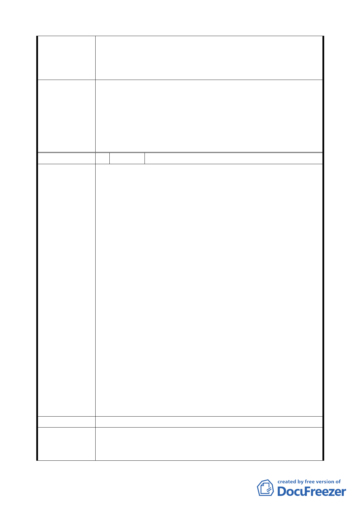

系統之交通支援性設施的短期規劃(俾提供更充足之公共設施
用地)，以及捷運圓山站西側地區整體更新之長期規劃，至目
前捷運圓山站西側地區未納入本次計畫範圍者，本府將納入內
政部核定補助之「都市更新示範計畫」委託規劃案辦理。
一、本案變更內容照案通過。
二、請市府相關單位就計畫內容及後續拆遷安置、私有財產
委員會決議
價值之保障方式，加強與基地內土地、建物等相關權利
人溝通說明，並對區內社會弱勢居民之謀生提供必要協
助。
三、依市府回應意見辦理。
編 號 2 陳情人 翁昭明
1. 本變更案乃配合 2010 年台北國際花卉博覽會，完成圓山站
西側整體綠美化並串連北大同文化園區，提供期間所需之
交通支援性設施，於此合先敘明。
2. 惟對短期發展而言交通支援性設施，文中乃設置人行、車
行及轉乘、接駁或招呼站，此設施於現況中鈞已存在，倘
有特殊需求時，得再行規劃，將現有之設施調整即可。何
需再增闢交通廣場？
3. 就經費預算而言，何時編列完成達成有償撥用，仍是大問
題，目前各縣市政府財政拮据，任何預算之調整，對年度
預算經費安排鈞有排擠之作用。
陳 情 理 由 4. 本區土地雖多數為國有，惟地上物(即房屋)多數仍為百姓
私有，鈞有設立稅籍、繳納房屋稅，住戶動輒皆已居住 40
年以上，其強制搬遷之補償費或安置問題，倘無法取得共
識，其衍生的抗爭、民怨、法律訴訟，又豈是 2010 年前能
夠完成？
5. 就環境景觀老舊零亂而言，市府大可配合當地現住戶，進
行環境綠美化改造，多點創意朽木亦能化金不是嗎？市府
亦可將此區劃為更新地區，由住戶配合當地人文歷史將本
區規劃為圓山文化區，改造一個更有全面性文化展示的地
區，而不是只為一個花卉博覽會而造成民怨沸騰與財政拮
据之窘境。
建 議 辦 法 同上。
1. 本案區位東臨圓山公園、市立美術館等休閒遊憩景點，往
市 府 回 應 意 見 西接孔廟、保安宮等歷史人文資產，東西向可串連為兼具
歷史文化與休閒遊憩的觀光帶。本案恰位於此東西向觀光
-4-